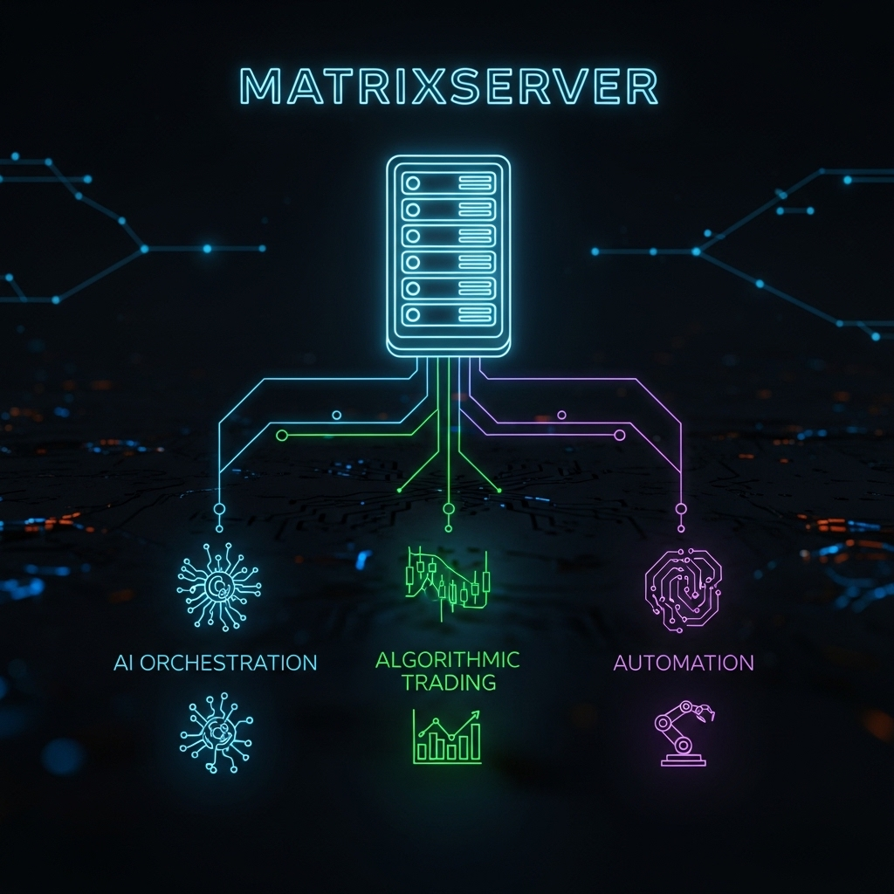

> Who Am Iâ–ˆ

About Me
At heart, I'm a builder.
Before I was coding autonomous AI, I was sinking 3,000+ hours into Cities: Skylines, getting my main city up to 500k population. Also built some pretty massive LEGO castles.
It's that same kind of focus that drives my code now. I'm all self-taught - I basically swapped late nights detailing and managing virtual cities for digging through Python scripts and API docs. I build systems that run on their own 24/7, learning and trading. A bit like managing a city that never sleeps.
But I don't just build things in a vacuum. Before I went all-in on automation, I spent years at Auckland University of Technology (AUT) doing IT, web design, and B2B marketing. Having a marketing degree gives me a totally different lens on development. I actually care about UX, accessibility, and human psychology. I don't just want the backend to work—I want the interface to actually make sense to the people using it.
- [+] Methodology: AI-Assisted Architecture, Code Comprehension, Systems Integration
- [+] Languages: Python, JavaScript/Node.js, HTML/CSS
- [+] Frameworks & APIs: FastAPI, React, Next.js, Telegram API, Discord API
- [+] AI & Databases: LangChain, ChromaDB (Vector RAG), SQLite, ComfyUI, LM Studio
- [+] Infrastructure: Docker, Git, VS Code, Termius, Webhooks
- [+] Creative Suite: Adobe Premiere Pro, CapCut, Photoshop, OBS Studio
Some Bots & Tools I've Built
Just like in Cities: Skylines, I like building things that work on their own. Here are a few projects I've put together:
- Twitch & SHOCKBOT: Made a couple of smart bots for Twitch. The main one uses RAG with a vector database (chroma_db) so it can actually hold a conversation and remember what we were talking about.
- Telegram Assistant: A simple Telegram bot that handles tasks and kicks off backend workflows for me automatically.
- ChatGPT to Todoist: A handy script that turns my ChatGPT chats into a to-do list in Todoist. Just a simple API hookup but super useful.
- Casino Autoplay Bot: This was a fun one. A computer vision bot that can watch the screen (
bankroll_detector.py) and play certain online casino games all by itself. - Local AI Stuff: Been running my own local AI models using ComfyUI. It's a cool node-based way to build custom image generation workflows without relying on outside services.
What's Next: AI in Web3
The big plan is to get these kinds of autonomous AI tools working on decentralized networks. I'm looking at grants from places like dYdX and Arbitrum to build some smart algorithmic trading bots.
The goal is to help their protocols run a bit smoother, bring in more liquidity, and just show what's possible when you mix AI with DeFi. Should be a cool build! 🔥
> The Architectureâ–ˆ
The "brain" of my personal infrastructure, built for absolute resilience and latency optimization.

> Autonomous Botsâ–ˆ
High-frequency algorithmic trading agent exploiting micro-inefficiencies.
[SYS] Starting stat_arb module...[EXEC] Filled BUY 0.5 ETH @ 3140.22 (Binance)[EXEC] Filled SELL 0.5 ETH @ 3142.05 (Bitget)[PROFIT] +$0.91 | Total ROI: +18.4%
AI-powered community moderation and engagement engine via LLMs.
[TWITCH] Connected to irc.chat.twitch.tv[MOD] User 'spammer99' timed out. Reason: Phishing.[LLM] Generated response for user 'newbDev'[MSG] @newbDev Welcome to the stream! Check !github.